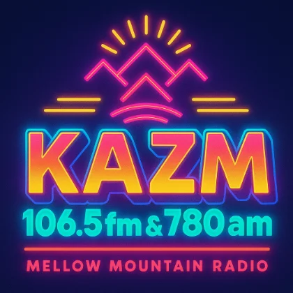

On air now in Sedona, Arizona
The mellow side of the dial.
Yacht rock and soft oldies all day, plus the local news, Arizona sports, and weather that keep the Verde Valley tuned in.
106.5 FM 780 AM
Ways to listen
-
106.5 FM
Crystal clear across Sedona and the Verde Valley.
-
780 AM
5,000 watts reaching most of northern Arizona by day.
-
Online stream
Press Listen Live and we play anywhere you are.
-
Smart speaker
Ask for "Mellow Mountain Radio" on your phone or speaker.
Sedona, computed live
The mountain, measured right now — moon math, golden light, the creek gauge, the planet’s own hum. Every number on this board is real, computed or fetched the moment you loaded the page. Tap any tile to go deeper.
Fresh off the air
Recently played
Tap any track to open it in Apple Music.
- Tuning in the last few songs...
Today's lineup
On the air today
A full day of mellow music, real news on the hour, and Arizona sports after dark. Times shown in Mountain Standard Time.
View the full program schedule- 6:00a Mellow Mountain Music Smooth yacht rock, local tunes, and relaxed energy to start the day — news and weather on the hour.
- 12:00p Midday Mellow Mountain Music The mellow flow continues through the afternoon, with news on the hour.
- 3:00p The World Famous 3 O'Clock Three Pack Three themed tracks, no interruptions — a daily highlight.
- 4:00p Sports & Music Block Live coverage of the Suns, Cardinals, Diamondbacks, ASU, U of A, and NAU, mixed with evening music.
- 10:00p Coast to Coast AM with George Noory Explore the unexplained — UFOs, conspiracies, and ancient mysteries.
- 2:00a Overnight Mellow Mountain Music Late-night chill and midnight classics to ease you into morning.
Explore
Everything happening on the mountain
News & Weather
Local, Arizona, and national headlines plus the forecast, on the hour.
Open newsArizona Sports
Diamondbacks, Cardinals, Suns, and college, called live on 780.
Game dayShows
Specialty voices and the day-parts that make the mellow sound.
Meet the showsEvents & Adventures
Hiking, the ski report, and where to ride this week.
Get outsideSchedule & Podcasts
The full week, and every show on demand.
View scheduleAdvertise
Put your business on the station Sedona trusts.
Reach SedonaIn rotation
The names that built the sound — and when one of them hits the air, watch their logo light up live. Tap any to give them a listen.

Today
Fifty years on the dial, and still mellow
KAZM signed on November 1, 1974, and has been Sedona's hometown signal ever since. Same easy sound, same valley, now streaming everywhere you are.